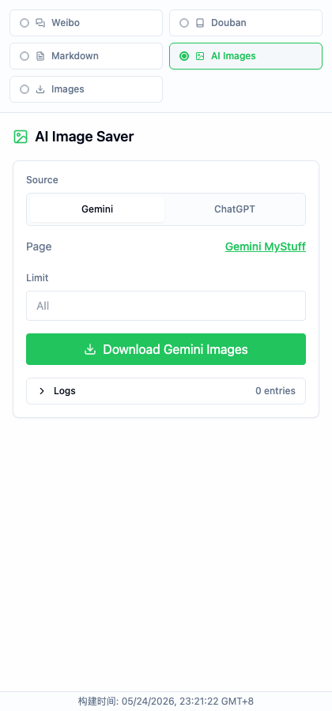

Scrape to Markdown
Add meaningful image descriptions.
Use AI-assisted image descriptions when you choose to configure an API key in the extension.
Optional AI image descriptions
Scrape to Markdown
Use AI-assisted image descriptions when you choose to configure an API key in the extension.
Optional AI image descriptions